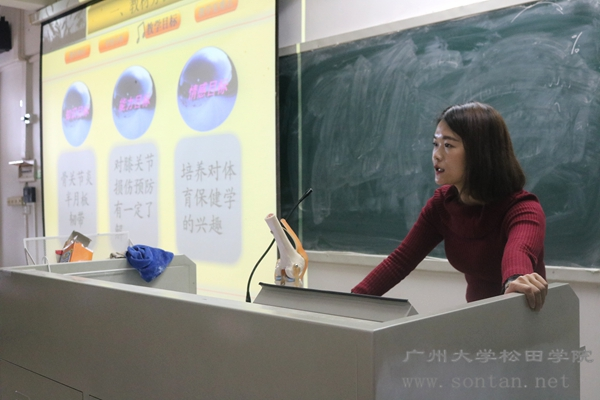
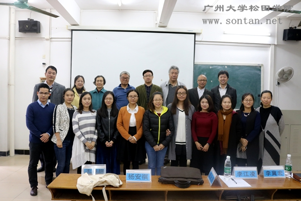

参赛教师在讲台上妙语连珠

第七届青年教师授课竞赛决赛全体合影
松田网讯 (记者：卢金媚 学生记者：唐紫莹） 11月21日下午，我院在9栋教学楼举行第七届青年教师授课竞赛决赛。我院院长庞永师教授，院长助理李江凌教授及李冀宏教授、王辛枫教授、杨安祺教授和谢献春副教授四位督导出席了决赛。另外，到场的还有40位学生代表评委。
参赛教师在讲台上妙语连珠，努力将知识用学生最容易接受的方法讲授出来，发挥出自己最佳的水平。在一番激烈的比拼后，最终产生了比赛结果。通识教学部（社会科学部）的郭慧敏老师、管理学系的贺嘉琳老师获得一等奖；管理学系王小娟老师、经济学系李重燕老师、电气与汽车工程系曾霞老师、艺术与传媒系刘叶芳老师获得二等奖 ；计算机科学与技术系杨许亮老师、社会体育系李末月老师、艺术与传媒系梁雪玲老师、外语系欧阳艳老师和翟秋兰老师、法政系林志聪老师获得三等奖。
随后，院长庞永师对本次比赛进行了点评，他对这次竞赛很满意，希望就此来提升教学水平，让教师从网络和生活中汲取到更多知识；并表示只有热爱学生，热爱工作，有深厚专业基础，有知识链的教师才是优秀的人民教师。
举办青年教师授课竞赛，不仅能使教师不断提升自身科学文化与思想道德修养，而且还能提升我院教学水平。期待我院越办越好，师资力量越来越雄厚！
|